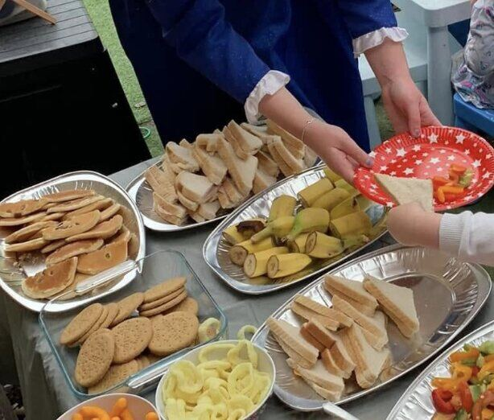
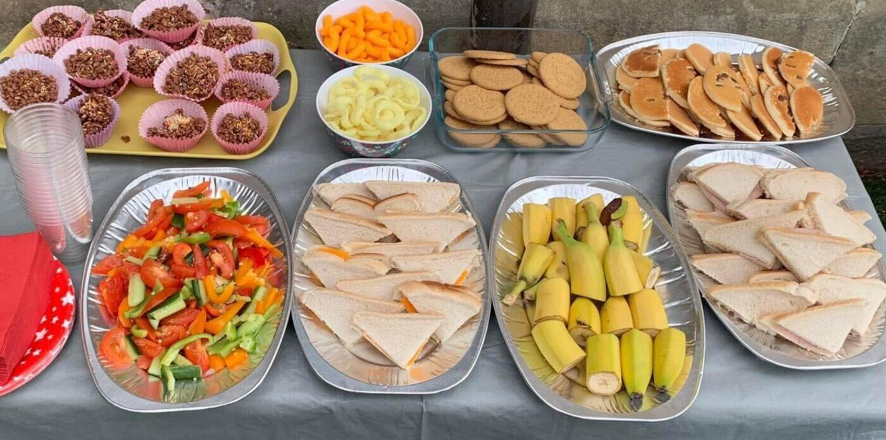
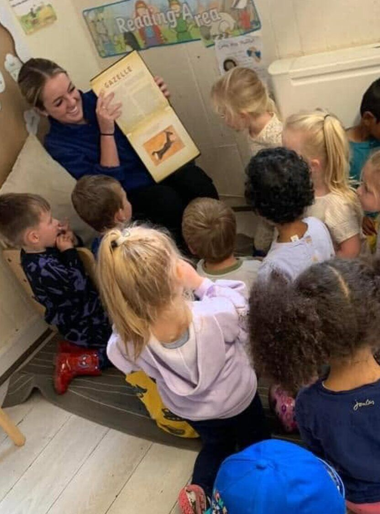
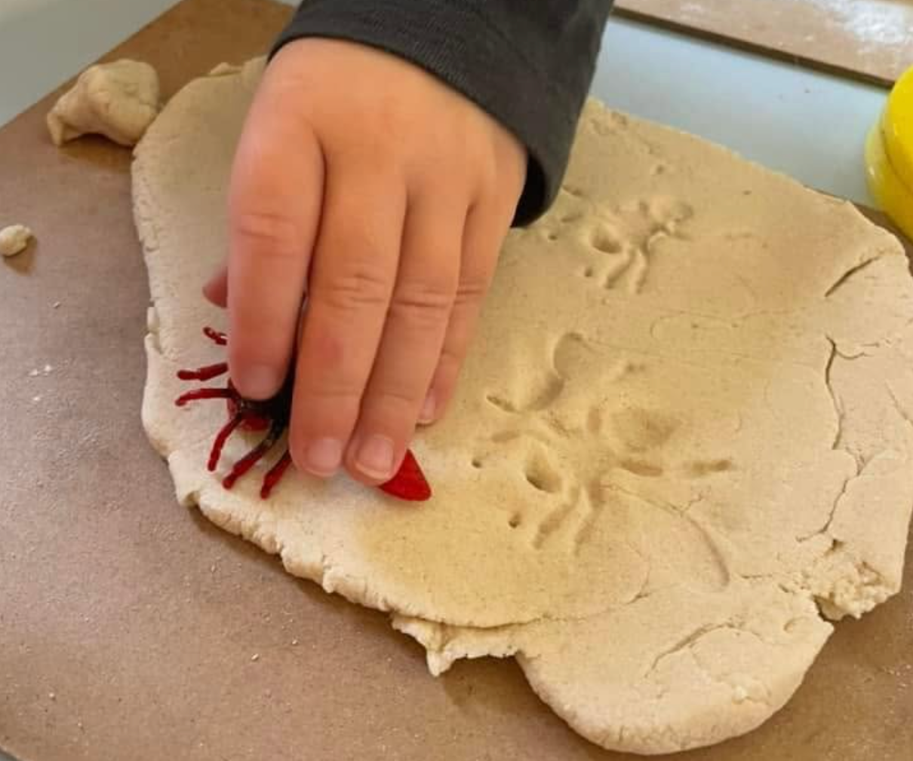
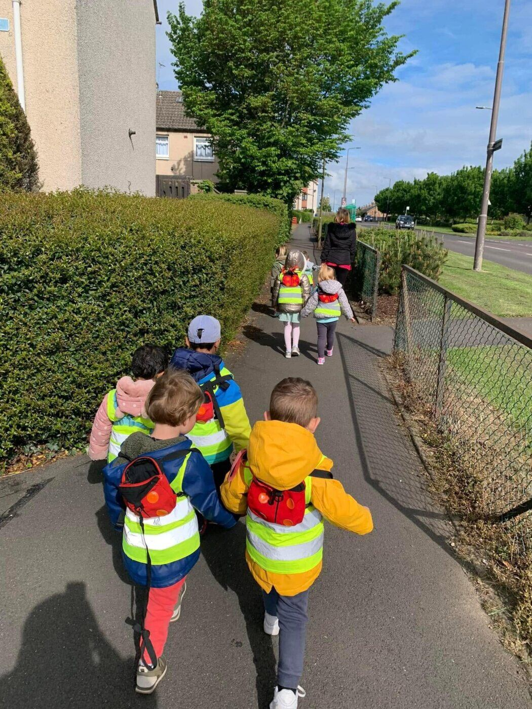
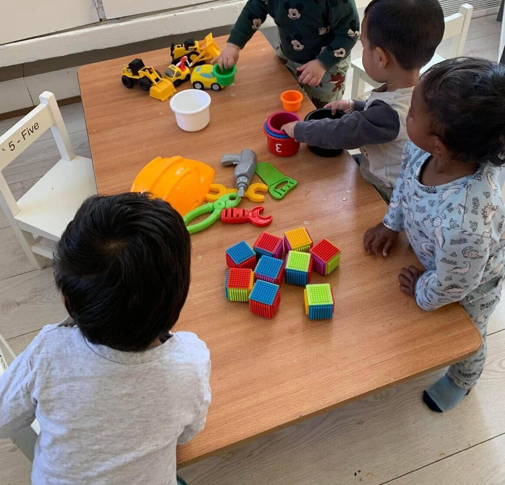
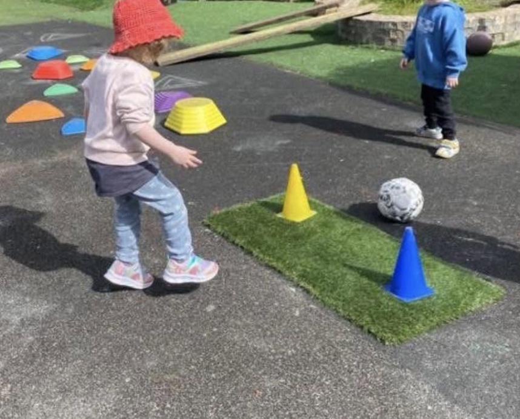
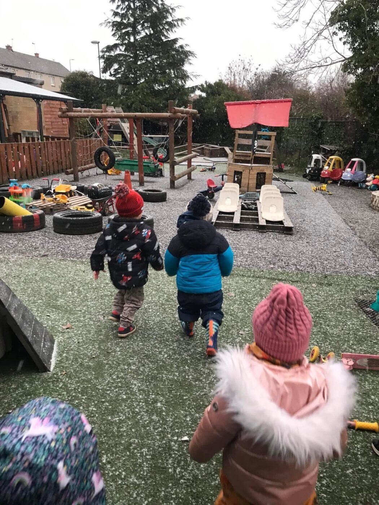

Babblers
3–24 monthsYour baby can enjoy a gentle home-from-home environment with plenty of cuddles and tactile activities. Purpose-built furniture and play resources encourage their mobility, dexterity, language and imagination to flourish.
Welcome to Bonnyrigg
Your child can enjoy gentle beginnings, purposeful play and exciting learning from three months to five years.
Arrange a visitConfidence at every stage
Your baby can enjoy a gentle home-from-home environment with plenty of cuddles and tactile activities. Purpose-built furniture and play resources encourage their mobility, dexterity, language and imagination to flourish.
Your child can enjoy a self-contained room with dedicated play, sleep and changing areas, a cosy story corner, messy activities and relaxed mealtimes as their confidence and independence develop.
Your child can enjoy engaging pre-school experiences that support communication, creativity, literacy and numeracy while incorporating Scotland’s Curriculum for Excellence and preparing them for their next stage.
Food at Bonnyrigg
Balanced meals and snacks are freshly prepared and carefully planned. Family-style mealtimes support independence and conversation, while gardening and cookery activities help children understand where food comes from.
Please tell the Nursery Manager about any medical, allergy, religious or cultural dietary requirements.



Friendly faces
Jennifer helps children and families feel welcomed at Bonnyrigg, supporting calm routines, happy relationships and a positive nursery experience.
Farina supports both Start Bright nurseries, helping the teams create welcoming, well-organised days where children feel secure and families feel informed.
Hayriye brings warmth and encouragement to the nursery day, helping children feel comfortable, included and excited to join in.
Add their name, role and a friendly two-sentence introduction here.
Add their name, role and a friendly two-sentence introduction here.
Bonnyrigg’s key-person approach gives your child a trusted practitioner who understands their needs and works closely with your family.
Parent information
Full day £75
Morning session £47
Afternoon session £41
Full day £78
Morning session £49
Afternoon session £43
Useful information
Everyday Bonnyrigg





